80%
| # | Portada | Artista - Canción |
|---|---|---|
| 1 | |
Lana Del Rey - Never let me go |
| 2 | 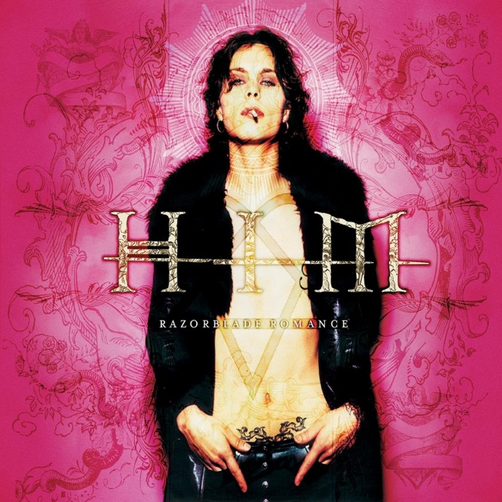 | HIM - Bury Me Deep Inside Your Heart |
| 3 | HIM - Gone With the Sin | |
| 4 | Siddhartha - Únicos | |
| 5 | Siddhartha - Ser Parte | |
| 6 | 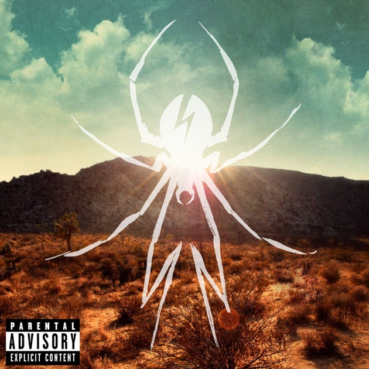 | My Chemical Romance - Summertime |
| 7 | My Chemical Romance - The Only Hope for Me Is You | |
| 8 |  |
My Chemical Romance - The World Is Ugly |
| 9 | 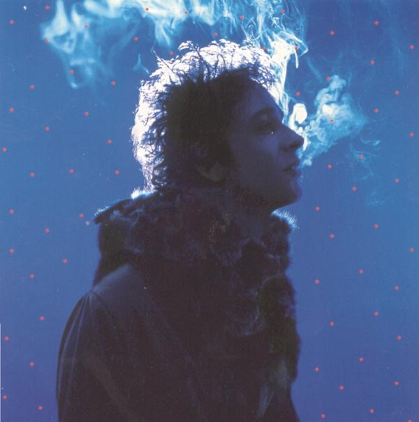 | Gustavo Cerati - Puente |
| 10 | Gustavo Cerati - Cosas Imposibles | |
| 11 | 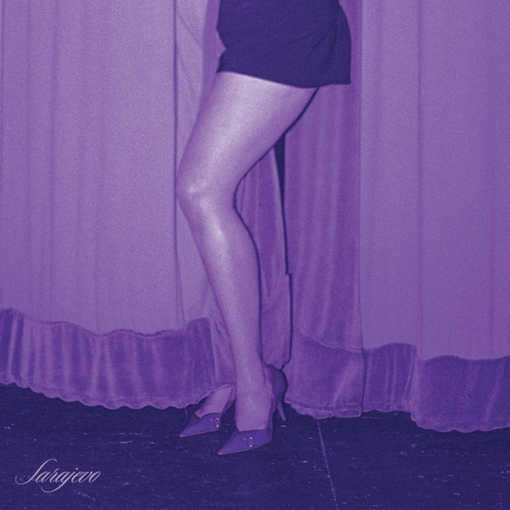 | José Madero - Suspira sobre mí |
| 12 | 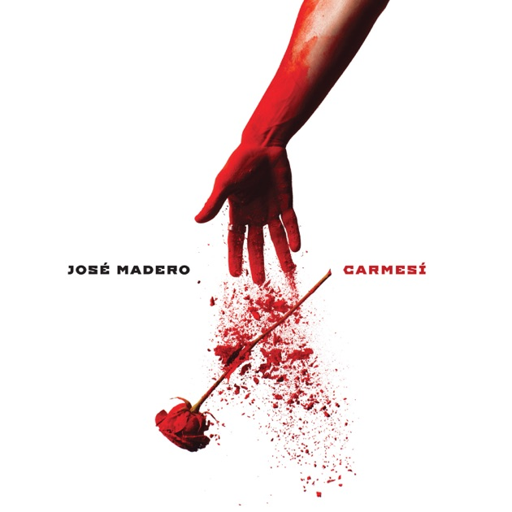 | José Madero - Monumental |
| 13 | 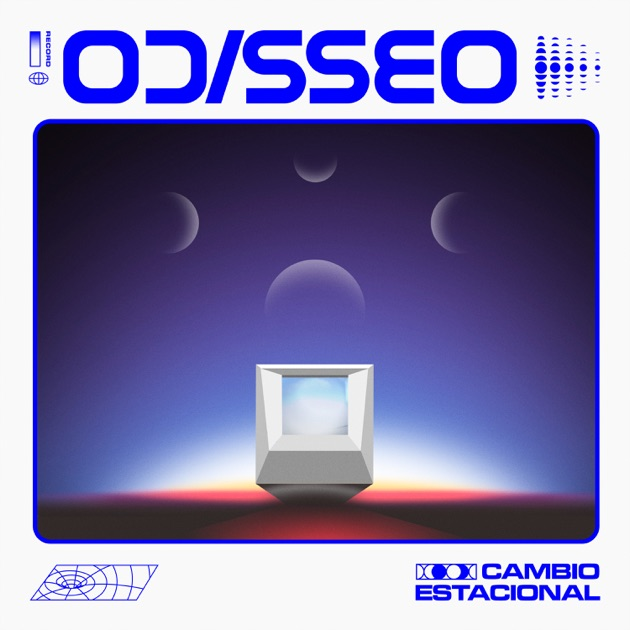 | Odisseo - Lo que quieras de mí |
| 14 | 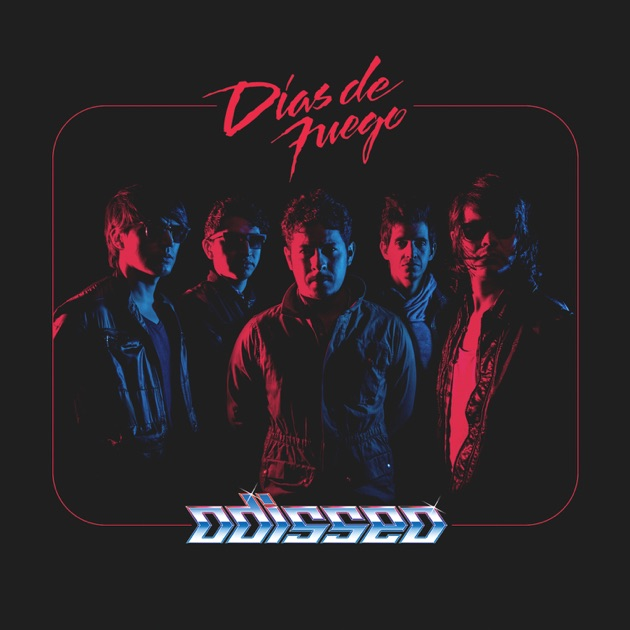 | Odisseo - Días De Fuego |
| 15 | Odisseo - Los Imanes | |
| 16 | 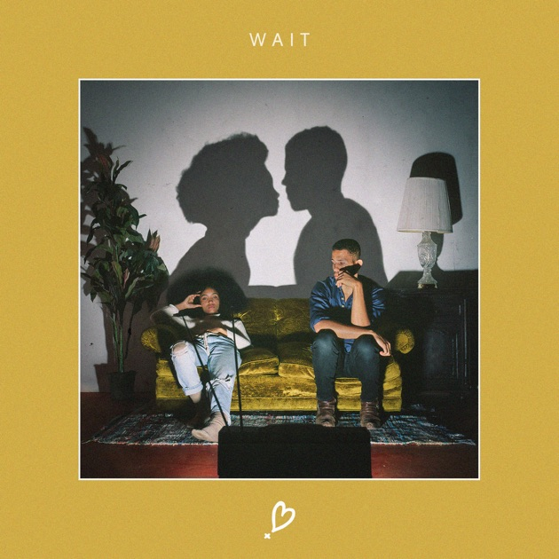 | NoMBe - Wait |
| 17 | 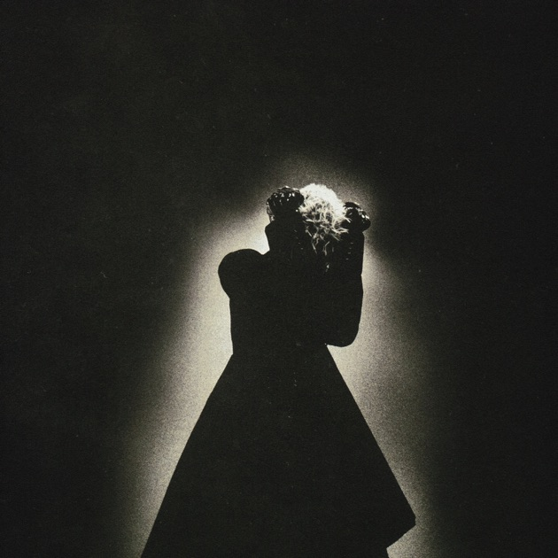 | keshi - Soft Spot |
| 18 | 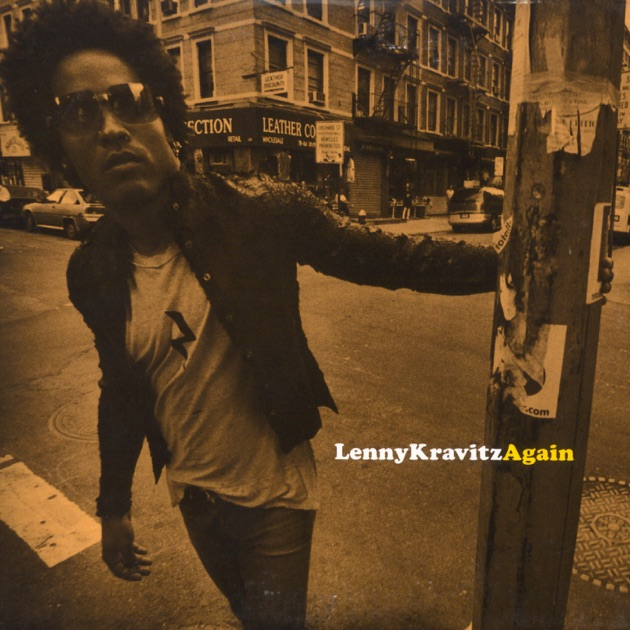 | Lenny Kravitz - Again |
| 19 |  |
Billie Eilish - Birds of a feather |
| 20 | |
Billie Eilish - Chihiro |
| 21 |  |
Cigarretes After Sex - Tejano Blue |
| 22 | |
Cigarretes After Sex - Dreams From Bunker Hill |
| 23 |  |
Clairo - Add Up My Love |
| 24 | Bratty - Continental | |
| 25 |  |
Bratty - Quiero Estar |
| 26 |  |
Bratty - Agosto |
| 27 | |
Bratty - Que Yo A Tí |
| 28 |  |
The Warning - AMOUR |
| 29 | |
Bratty - Estos Días |
| 30 |  |
Jesse - Wanted |
| 31 |  |
Maneskin - IF NOT FOR YOU |
| 32 | |
Maneskin - VALENTINE |
| 33 | 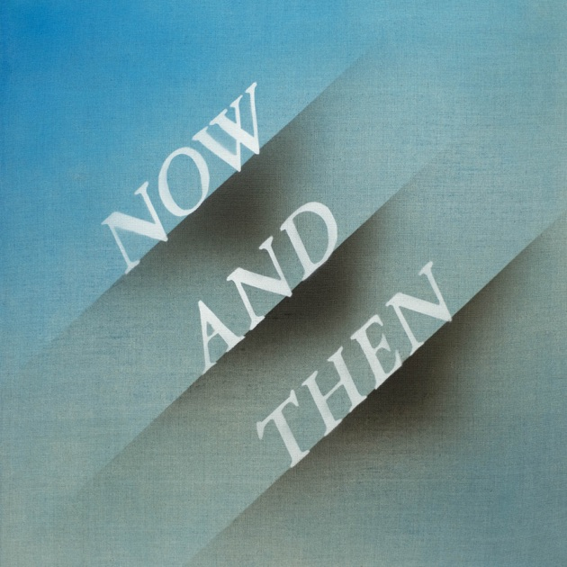 | The Beatles - Now and Then |